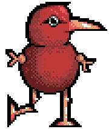
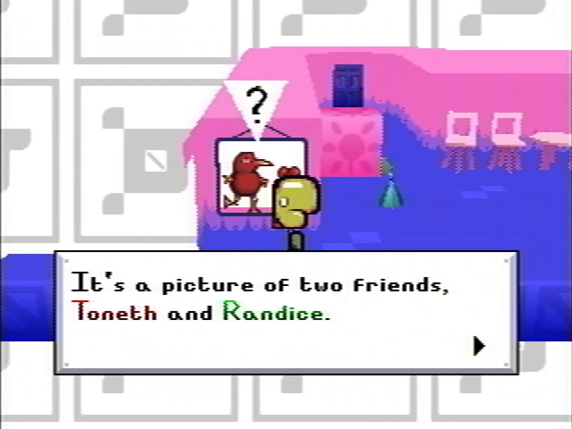

Fanmade recreated sprite
Toneth is one of the pets in Petscop, intended to be in but not presently included in Even Care. While he is not seen in-game until placed by Marvin in Petscop 6, he is depicted in a picture on the wall of the first room in Even Care.
He is a red creature that is presumably intended to look like a bird. Toneth is a half-brother of Roneth, and also shares a similar head. He has a broken leg. According to the picture on the wall in the entrance room of Even Care, Toneth is friends with Randice.
His name in text boxes appears in red.
(Enter a description here)
---
- A bird. I think I forgot what birds look like.
- "Funny stupid blob monster" says Mike. That's what it is.
- Painter. Painting puzzle
- Catch Randice first(?)
- Has broken leg for some reason. I already hung him on a wall, too late to take it back. It makes me think about the dog actually. Because when the car hit him I thought "at least it will be over soon." He survived it, and I was the only one who still wanted to put him down. A dog is an innocent [cut off]
When that dog wags its tail and it it appears happy, it's not real.
I guess that's toneth then. toneth toneth toneth toneth toneth toneth toneth toneth toneth toneth toneth toneth toneth toneth toneth toneth toneth. the end. it's yucky outside.
In Petscop 13, in Paul's recording of catching all five pets currently available in Even Care, a series of textboxes appear that indicate that Toneth was intended to be added to the level at some point.
Congratulations ... you caught every pet in Even Care (aside from Toneth, who isn’t here yet.)
It is apparent that despite not being implemented, he still is in the game's files, with a unique sound upon being caught and content to his pet description.
He can be caught if placed into the world. This is visible in Petscop 6, as he appears while objects are being spawned by Marvin, possibly randomly. Paul later catches Toneth as he is left in this location.
In recordings shown in Petscop 20, Toneth is shown to be the only pet Marvin has caught.
In development, shown in the Extra Stuff menu, Toneth did not initially have a broken leg, but also did not have arms. At one point, his body had a feathery texture.

The picture of Toneth and Randice, in Even Care
Parts of Toneth's description appear to be formatted like notes, possibly implying to be ideas for how Toneth would be implemented. The first two lines may be comments on how Toneth resembles a bird, but deviates from the usual anatomy of birds. The next two lines may be ideas for how Toneth would have been caught in Even Care if implemented, with a puzzle related to painting and that Randice may have had to be caught first. Notably, a painting easel appears in the "connector" room between Pen's room and Randice & Wavey's room in gen 2; this easel disappears in later gens.
The rant about the dog near the end of Toneth's description may have been added in by Rainer after Petscop was cancelled. It is unlikely that the rant was originally part of Toneth's description, since Rainer was probably in a more sane headspace when he created and likely wrote Toneth's original description, during the time when Petscop was being developed for public release. In addition, the rant matches the usual extremely cynical and cryptic tone of other messages known to be from Rainer. Thus, the rant was likely added by Rainer while he was retooling the game for Marvin, likening Toneth to other things he had experienced before, such as its broken leg to a dog he had saw get hit by a car.
The painting puzzle mentioned in Toneth's description may actually be referencing the section in the master bedroom where the player has to paint over a wall with black paint. It's possible that the aforementioned painting section in the master bedroom was originally meant for Toneth, then when Petscop was cancelled, Rainer then repurposed it for the master bedroom.
"I already hung him on a wall, too late to take it back" may be in reference to the picture of Toneth and Randice hung on a wall in Even Care.
Toneth may be associated with Michael Hammond, as both of them are described as painters, in Toneth's description and in the Book of Baby Names respectively.
| People | Paul · Belle · Carrie · Marvin · Rainer · Anna · Mike · Lina · Jill · Daniel |
|---|---|
| Characters | Guardian · Amber · Pen · Randice · Roneth · Toneth · Wavey · Care · Tiara |
{kind=link}
{kind=link}
{kind=link}
{kind=link}
{kind=link}
{kind=link}
{kind=link}